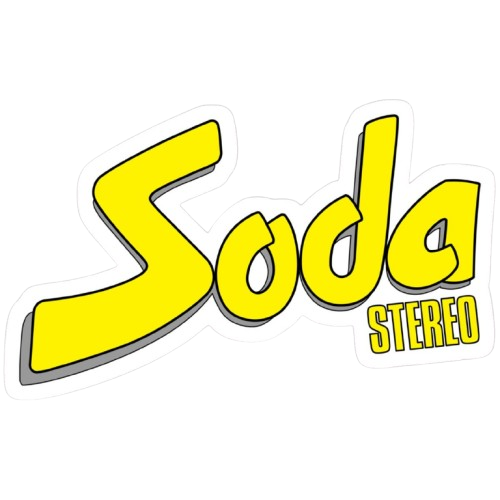

Formación de la banda
Cerati, Bosio y Alberti se unen en Buenos Aires. Empiezan a tocar en bares y recitales pequeños de la escena under porteña. El nombre de Soda Stereo surge de la combinación de dos palabras de la cultura pop.


Voz principal, composición.
11 ago 1959 – 04 sep 2014.

Batería, percusión, co-fund.

Bajo, coros, co-fund.
Tres músicos. Una ciudad en efervescencia.
La historia de la banda más influyente del rock latinoamericano.
Con la vuelta de la democracia en 1983, la sociedad necesitaba explotar. El rock nacional, antes perseguido, se convertía en el lenguaje de una generación.
"Era una época de libertad total. Podíamos hacer cualquier cosa porque nadie sabía qué era lo correcto."
La postguerra de Malvinas dejó una herida profunda pero también encendió un orgullo cultural sin precedentes. Buenos Aires se llenó de bares, clubs nocturnos y espacios de experimentación artística.
La escena del rock nacional ya tenía referentes —Spinetta, Almendra, Charly García— pero Soda Stereo traería algo diferente: imagen, producción y ambición internacional.



Cerati, Bosio y Alberti se unen en Buenos Aires. Empiezan a tocar en bares y recitales pequeños de la escena under porteña. El nombre de Soda Stereo surge de la combinación de dos palabras de la cultura pop.
Lanzan su primer álbum homónimo con CBS Records. Hits inmediatos: "Debo Ser" y "Trátame Suavemente". La banda empieza a llenar teatros en Argentina.
El segundo álbum explota en toda Latinoamérica. Primera gira por Chile, México, Venezuela y Colombia.
Conocé la historia completa


Años de carrera activa.
Álbumes de estudio publicados.
"De Música Ligera" elegida la mejor canción del rock a nivel global.